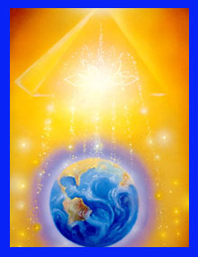

SVÌTOVÁ MEDITACE:

(foto od Sharon Maia Nichols)
ve støedu 2. kvìtna 2001
v 18.00 hod.
Následující informace o pøipravované meditaci jsou podlo�eny informacemi pøedanımi Archandìlem Gabrielem.
�ijeme v období velikıch zmìn. Nastal èas dalších zmìn a potenciálního léèení, kterı nepamatujeme za celé období zaznamenané historie. Dostáváme se do další fáze vıvoje naší planety. Nastal èas léèení omezeného systému duality a patriarchální spoleènosti pøesunem do energií pozvedající se duše v ka�dém z nás.
Aby se léèení mohlo uskuteènit, musíme ka�dı pøevzít zodpovìdnost za svùj individuální �ivot novım zpùsobem. Musíme té� spolupracovat pro dobro celku... Spoleènì mù�eme vybudovat Ráj na Zemi.
Vítáme ty, kteøí se ji� podíleli na Meditacích Dìtí Svìtla! Doufáme, �e vy, kteøí se zúèastòujete poprvé, oceníte tuto událost a shledáte, �e napomù�e léèení ve vašem �ivotì.
Nastal èas poslední iniciace planetárního Vzestupu.
Krátké shrnutí:V posledních letech se nacházíme v období nebıvalého léèení a zmìn. Pøesouváme se z jednoho stádia uèení/zkušeností do další fáze. To se stává pøibli�nì ka�dıch 2000 let, kdy se pøechází z jednoho vìku do druhého. Nyní konèí vìk Ryb a pøesouváme se do Vìku Vodnáøe. Tento posun nám umo�òuje zbavit se mnoha omezení, která jsme znali, do období Jednoty a Harmonie. Následující dva tisíce let bude spoèívat v uèení se mnoha zpùsobùm jak integrovat vìdomí duše do hmoty - zapojení naší lidské a bo�ské èásti do vìdomé zkušenosti!
Tento proces je ovlivòován mnoha energetickımi posuny. My se na této stránce zamìøíme na jeden z nejsilnìjších. Od roku 1997 se úèastníme série energetickıch akcelerací neboli iniciací na naší planetì. Tyto iniciace byly pøipodobnìny modelu Krista, i kdy� nejsou �ádnım zpùsobem spojeny nebo omezeny na urèité nábo�enství. Jedná se o planetární posun, kterı nás všechny ovlivní. Jak ji� jsme se zmiòovali, mu� jménem Je�íš se inkarnoval pøi posledním planetárním posunu vìdomí (pøed 2000 lety), aby pøipravil planetu na následující období. Zasadil semínka mo�nosti stát se "celistvou" neboli Kristovskou bytostí. To je pøesnì to, co demonstroval svım �ivotem. Proto øíkal, "to co dìlám já, budete èinit i vy i ještì vìtší ne� já jsem udìlal."
Zkrátka ukázal mo�nosti sjednocené spirituální lidské rasy, která se zaèíná nyní se vstupem do vìku Vodnáøe probouzet.
Tento posun neboli akcelerace tìchto mo�ností je vytváøen a rozšiøován otevøením urèitıch energetickıch vírù neboli bran. Tyto aktivace umo�òují vysoce frekvenèním energiím pøístup k urèitım energetickım bodùm okolo planety. První otevøela Velkou Pyramidu v Egyptì 23. ledna 1997 - pøi iniciaci Zrození.
Od roku 1997 jsme ji� prošli iniciacemi Zrozením, Køestem, Promìnou na Hoøe, Sebezapøením, Ukøi�ováním/Zabalením (tøi dny v hrobce pro pøemìnu) a Vzkøíšením. To znamená, �e tyto energie byly vpuštìny neboli iniciovány do hlavních energetickıch center kolem svìta. Nyní jsou integrovány a vstøebávány ka�dım z nás, jak tyto energie zakotvujeme do naší zkušenosti, co� vytváøí vnitøní i vnìjší zmìny v našich �ivotech.
Nyní jsme pøipraveni na finální etapu iniciaèního procesu - poslední zasvìcení, Vzestup. To probìhne v období duben - kvìten, 2001. Cesta na tuto iniciaci nás povede do Egypta (kde v tomto období probìhne i závìreèná Svìtová Meditace).
Budeme mít velikou radost, kdy� se k nám pøi této pøíle�itosti pøipojíte! Pøi pøíle�itosti ka�dé iniciace jsme podnikli vıpravu. Na www stránkách jsou obrázky a popis z ka�dé cesty. Pøi této cestì tomu nebude jinak...
S ka�dım krokem tohoto procesu se pøipojovalo více a více lidí z celého svìta. Poslední iniciace se konala v øíjnu 2000. To byl pøechod, zrychlení, pøíprava energetického pøeklenutí mezi èakrou solar plexus a srdcem. Jedná se o propojení ni�šího Já se srdcem - které je místem, kde pøijímáme energii ducha. K této meditaci se pøipojilo více ne� 15 a pùl milionu lidí!
Máme-li letos zajistit stejnı léèivı úèinek na náš svìt, potøebujeme vaší pomoc a úèast pøi této vzácné pøíle�itosti.
Kdy� se budeme všichni podílet na meditaci, a vy se pøipojíte k našim energiím/zámìru v patøièném èase, mù�eme doslova vytvoøit jednotné pole léèivé energie kolem celé planety. Ka�dı z nás je schopen to uskuteènit, nebo� zapojení vaší energie, umo�ní zakotvení energie otevøeného energetického víru a� u� jste kdekoliv. Spoleènì vytvoøíme zkušenost, která bude slou�it pro dobro celku. Jeden za všechny a všichni za Jednoho!
Pøed tím, ne� se pustíme do popisu formy meditace, chceme pøipomenout, �e Gabriel nám pøedal Pøípravnı Dech, kterı kdy� udìláte pøed meditací, tak vám velmi pomù�e v propojení ni�šího a vyššího Já:
A-U-M tvoøí tøi zvuky, které energeticky spojují bo�skou trojici ve vás.
CVIÈENÍ:
1. Udìlejte si pohodlí a uvolnìte se.
2. Zhluboka se nosem nadechnìte a vydechnìte ústy.
3. Pokraèujte v tomto zpùsobu dıchání a zaènìte se napojovat na váš zvuk.
4. Jak vyslovujete tøi hlásky A-U-M, zamìøte se na vytvoøení tøí samostatnıch mostù následovnì:
A - pøedstavte si propojení 1. èakry (konec páteøe) se 6. èakrou (tøetí oko uprostøed èela).
U - pøedstavte si propojení 2. èakry (oblast pupku) se 4. èakrou (srdce).
M - pøedstavte si propojení 3. èakry (solar plexus) s 5. èakrou (hrdlo)
5. Pokraèujte nìkolik minut ve vytváøení tìchto energetickıch mostù ve vašem tìle pomocí zvuku a dıchání.
Doporuèená forma meditace:
Ve støedu 2. kvìtna mù�ete tuto jednoduchou ceremonii/modlitbu provést sami nebo ve skupinì..
Dodr�te èas, aby se Invokace zaèala èíst pøesnì v celou hodinu. Tím pádem budeme všichni øíkat stejná slova a podobnı zámìr ve stejném okam�iku a to vytvoøí mohutnou svìtovou rezonanci.
Doporuèujeme, aby si ka�dı úèastník dopøedu pøipravil svoji vlastní vizi léèení planety. Mnozí pak zaznamenali velmi silnı zá�itek a léèení.
Asi deset minut pøed zaèátkem sjedno�te energii skupiny. Mù�ete pou�ít libovolnou metodu. My doporuèujeme následující:
1. Spojte ruce, zavøete oèi a zhluboka se nadechnìte. Pøedstavte si, �e se spojujete s energií vašeho solar plexu, vdechujte nosem a vydechujte ústy. Nyní se stejnım zpùsobem spojte s energií vašeho srdce a pøedstavte si, jak vyzaøuje ve všech smìrech. Nyní si pøedstavte, jak se tyto energie spojují a vytváøejí svìtelnı most.
2. Jakmile jsou všichni zapojeni, uzemnìni a soustøedìni, vyšle ka�dı svìtelnı paprsek ze svého srdce k osobì sedící po jeho pravé ruce a otevøe se paprsku, kterı k nìmu posílá osoba sedící po jeho levici. Dobøe to funguje, kdy� sedíte v kruhu. Jakmile se skupina propojí skrze srdce, propojte se stejnım zpùsobem pøes solar plexus.
Po zbıvající èas se zklidnìte.
3. Pøed stanovenım èasem (18 hod = 10pm Universal Time), pøedstavte si planetu Zemi ve støedu místnosti. Pøedstavte si ji vyrovnanou, harmonickou, plnou míru a jednoty. Ka�dı ji pošle energii ze svého srdeèního centra a vyplní ji léèivım svìtlem a pøipojí se k nám v Jednotì.. Pak si pøedstavte, �e se k nám pøipojujete u Velké Pyramidy v Egyptì.
4. Ve stanovenı èas nahlas pøeètìte následující dvì invokace. Pøedstavte si, jak slova prostupují planetou a dále léèí!
Jedná se o stejné invokace, které jsme pou�ívali pøi našich pøedchozích meditacích, proto�e vytváøejí harmonii mezi mu�skou a �enskou energií. První invokace je zamìøena na mu�skou energii (ducha) zatímco druhá je zamìøena na �enskou energii (duši).
Doporuèujeme, aby jste èetli celá skupina nahlas ve stanovenı èas podle vaší èasové zóny. Síla mluveného slova uvádí zámìr do pohybu nejsilnìjším zpùsobem.
Velká invokace
A� z bodu Svìtla v mysli Bo�í, proudí Svìtlo v mysl lidí.
Nech� Svìtlo sestoupí na Zem.
A� z bodu Lásky v srdci Bo�ím, proudí Láska v srdce lidí.
Nech� Kristus vrátí se na Zem.
Z centra kde je Vùle Bo�í známa, a� Zámìr lidskou vùli vede.
Zámìr, kterı Mistøi znají a jemu� slou�í.
Z centra které lidské plémì zveme, a� plán Lásky a Svìtla vzejde.
A zapeèetí bránu za ní� sídlí zlo.
A� Svìtlo, Láska a Síla obnoví tento Plán na Zemi.
INVOKACE SPOJENÍ DUŠÍ
My jsme spoleèenství duší. Nebo� ka�dı z nás je duše, mysl, vìdomí a tìlo �hnoucího a záøícího Svìtla. Jsme jak mu�i tak �eny, celiství a kompletní v našem bytí a pøesto hluboce vnitønì spojení se všemi ostatními dušemi v celém Vesmíru.
Duše Jediného je dokonalá a my hrajeme svùj díl v procesu zdokonalování. Duše jediného se jakoby rozdìlila a nyní se opìt sjednocuje, tak jak my se opìt stáváme celiství.
Jsme pøesnì tam, kde máme bıt. Máme pøesnì to co potøebujeme k následujícímu kroku na naší Cestì. A �ivot nám neustále cestou pøedkládá nové pøíle�itosti. Jsou to pouze pøíle�itosti, ani dobré, ani špatné. Špatné je pouze naše oznaèení pro takové zkušenost, kterım zatím nerozumíme nebo nejsme schopní je pøijmout. Vše je souèástí dokonalého zjevení velkého Plánu a my jsme partneøi jeho uskuteèòování. Zde a nyní se pøipojujeme k oslavì naší cesty odkrıvající se lásky.
Nebo� je jen Jedna Duše, jen jeden zvuk. Píseò písní, zvuk Duše je "Aum."
("Aum" - opakujeme tøikrát)
Nech� všichni poznáme Lásku která všem pøináší porozumìní.
5. A� skonèíte ještì chvíli v klidu poseïte, pak ka�dı nahlas pøeètìte váš osobní zámìr léèení vašeho �ivota i planety jako celku, nebo buïte prostì spontánní pøi vašem �ehnání. Potvrïte jako skupina v�dy ka�dému jeho prohlášení slovy "Nech� se tak stane!"
Velmi dùle�itá poznámka - Buïte tvoøiví a dobøe se bavte!
Toto je pøíle�itost zakusit Sílu JEDNOTY!
Další informace najdete na adrese Dìtí svìtla
Po�ehnání Vám všem!